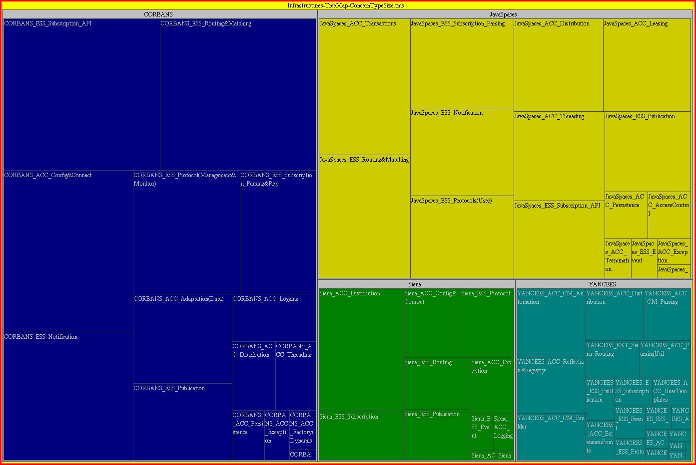

|

|
Analysis of Versatility Trade-offs of Publish/subscribe
Infrastructures
CASSIUS Reusability Benchmark
|
|

|
This page should open an applet showing
the treemap with the concerns collected for each infrastructure. You
can use this applet to navigate through the concerns and to build your
own customized visualizations based on the provided data set.
The dataset used to generate these visualizations is available in the file: Infrastructures-TreeMap-Data.txt
Infrastructure
Concerns
We analyzes the distribution and size of essential publish/subscribe
concerns in four infrastructures: YANCEES, Siena, CORBA-NS and
JavaSpaces. We collected the data and displayed it in the form of
treemaps as follows. These treemaps allow the comparison of the
distribution of conserns among these infrastructures, which is a
consequence of their architecture and versatility strategies.
Infrastructures Size Comparison
This treemap allows the visual comparison of the total size (in LOC) of the four infrastructures we analized.

Infrastructures Size Comparison with Concern Type Hightlighting
This
visualization not only allows the comparison of the infrastructure
sizes but also highlights the different types of concers (essential,
accidental, optional and extension). Extension concerns capture the
features that are extended to the core set of YANCEES features in order
to produce an application-specific infrastructure.

Accidental versus Essential Concerns
This
treemap shows the absolute distribution of accidental and fundamental
concerns in the selected infrastructures. It also shows optional and
extended features (this last set of features is only available
in YANCEES)
Relative Distribution of Concerns per Infrastructure
This is similar to
the first visualization. The data, however, is presented in relative
values. It shows the proportion of each concern per infrastructure,
enphasizing the difference between accidental and essential concerns

Relative Distribution of Each Concern per Infrastructure
Shows the relative distribution of the different concers in the infrastructures.

Acknowledgements
This research has been sponsored by NSF (grants 0133749,
0205724, 0326105, 0527729,0524033), an IBM Eclipse technology exchange
grant, and the Intel Corporation.
Research Staff: Roberto Silveira
Silva
Filho
Professor:
David F.
Redmiles
Institute for
Software Research
Information and Computer
Science
University of California,
Irvine
CA 92697-3425
This page was last updated on May
2nd,
2008